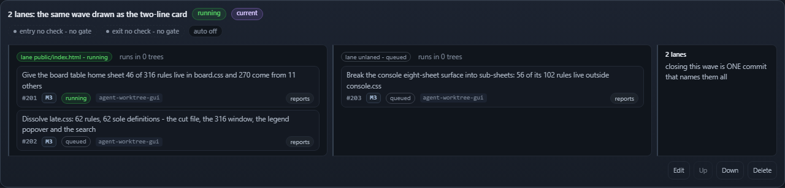
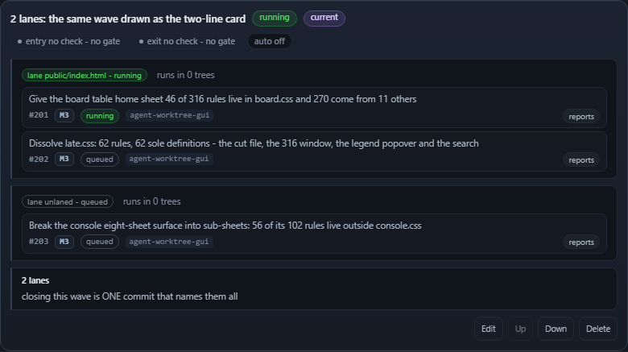
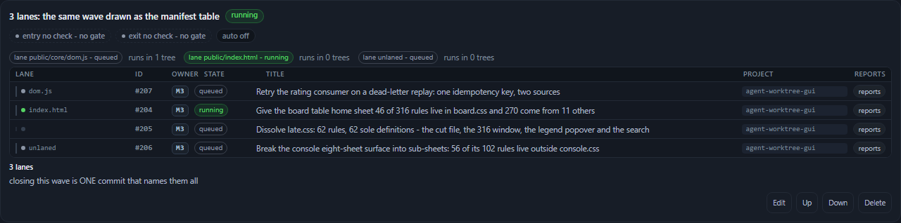
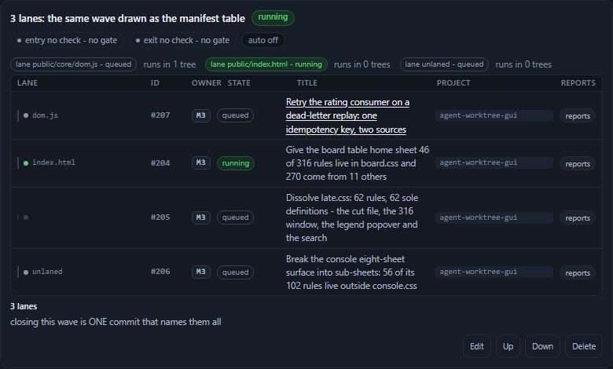
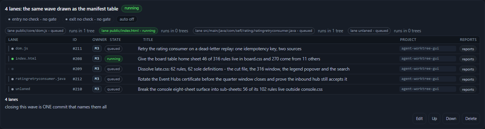
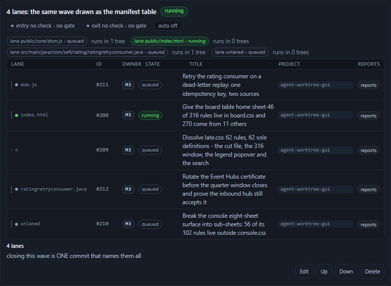
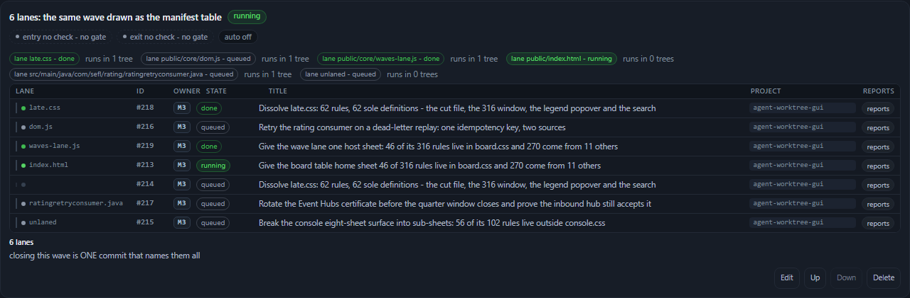
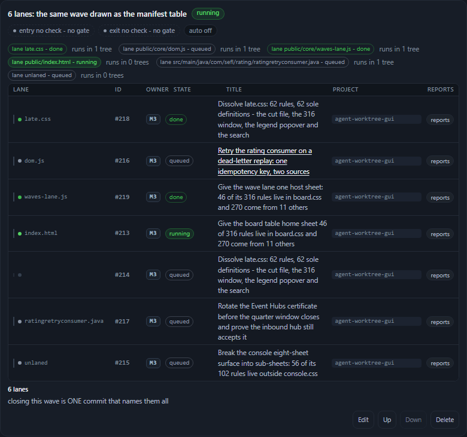

docs/reports/initiatives-wave-lane-options-2026-11-28.html section 5 and
docs/reports/wave-lane-options/lane-scaling.json. Written 2026-11-28. Version unchanged at 1.196.1.
Section 5 measured one wave at two, four and six lanes and found the ranking flips with the count: two lanes is O4 (475px titles, two wraps, 288px box), four is O3 (711px, one wrap, 403px), six is O3 (711px, one wrap, 493px), and O1 - today's drawing - stops working at the third lane, where its title track is handed 0px and the words wrap one character per line (75 to 95 lines per member, a 3,226px box at three lanes and 4,972px at four).
"The lane count is the missing dimension in the first recommendation. It decides: two lanes is O4; three or more is O3, or O2 if the lane has to stay a block; O1 is not a candidate at any count." (section 5)
lane-scaling.json holds the per-run evidence for that sentence: O3 at four lanes is 5 members at 711px
each, one line, a 403px box; at six lanes 7 members at 711px, one line, a 493px box. O1 at three lanes is
titleW: 0 with lines: 75 for the first member. Those two runs are the floor and the ceiling
this row had to land between.
The count now chooses the drawing, and the module says so in one place: public/core/waves-lane.js:311
(laneDrawingOf). Two lanes are the two-line card (O4); three or more are the manifest table (O3). The pane
still decides whether two lanes sit side by side - that is a width question and it stays a container query - but the
count, not the width, decides which drawing a wave gets. The block carries it as
data-lane-drawing="cards|table" on .wave-lanes, so a gate reads the drawing instead of
inferring it from a class a restyle could change.
Each member's title leaves the six-column row and takes the lane's whole content width; the id, owner, state,
project and reports chip follow on a meta line under it. The DOM keeps the reader's order (id, owner, state, title,
project, reports) and the title is moved to the first line with order: -1, so the drawing changed and
the reading order did not (public/initiatives.css:1178).
No lane boxes. A summary strip keeps every lane's chip and its read sentence (the words the lane used to draw inside
its box), and under it one table holds every member, grouped by lane and sorted by lane path, with the lane as a
column. The member row is the same memberHtml the other drawings use, with one cell added in front, so
the id, owner, state, title, project and reports chip are one implementation across all three drawings
(public/core/waves-lane.js:349, public/initiatives.css:1119).
The closing note moves under the table for this drawing, and beside the lanes for the card drawing. It is not decoration: standing beside a 1304px column, its 196px took the table's title from 711px to about 490px in the first cut - measured, then fixed by moving the note under the table, which is where the O3 sketch draws it.
The report's O3 draws a 120px lane column and its four-lane capture shows
src/main/java/com/sefl/rating/RatingRetryConsumer.java broken mid-token. The choice made here is a
short label: the lane cell draws the file's own name (the last path segment) and keeps the whole path on the
cell's title and in the summary strip's chip, which still reads
lane src/main/java/.../RatingRetryConsumer.java - queued in full (public/core/waves-lane.js:322).
Why the label rather than the width: the whole path needs about 330px at the column's 10px mono, and every one of those
pixels comes out of the title track - the 711px that is the reason O3 exists. A basename is bounded by the file's own
name, not by how deep its directory is. The column then moved from 120px to 162px
(public/initiatives.css:1106): 120px does not hold a 25-character basename either, and 162px is the
measured longest label plus the dot, its gap, the rule and the padding. Measured labels at 1304 in the six-lane wave:
| lane cell draws | label width | column | clipped | lines | whole path kept |
|---|---|---|---|---|---|
| late.css | 44px | 162px | no | 1 | late.css |
| dom.js | 33px | 162px | no | 1 | public/core/dom.js |
| waves-lane.js | 71px | 162px | no | 1 | public/core/waves-lane.js |
| index.html | 55px | 162px | no | 1 | public/index.html |
| ratingretryconsumer.java | 132px | 162px | no | 1 | src/main/java/com/sefl/rating/RatingRetryConsumer.java |
| unlaned | 39px | 162px | no | 1 | unlaned |
The route serves the lane name normalised (ratingretryconsumer.java), which is the word the read owns; the
cell draws exactly that, not a case the panel invented. The one caveat of a basename: two lanes in different packages
with the same file name read the same in the column - the two summary chips above the table still say which is which,
and each cell's hover names the whole path.
One real panel, one initiative card, four waves on it (2, 3, 4 and 6 lanes), the report's own member titles, in the
reader's floating frame: a 1400px window whose wave column measures 1304px, and a 900px panel whose wave column
measures 804px. Every number below is read off the rendered page by
tools/verify-wave-lane-counts.mjs; the raw ledger is docs/reports/wave-lane-counts/lane-counts.json.
| lanes | drawing | title width | wraps per member | wave box | report's number | overflow |
|---|---|---|---|---|---|---|
| 2 | cards (O4) | 476px | 2 / 2 / 2 | 307px | 475px, 2, 288px | 0 |
| 3 | table (O3) | 683px | 1 / 1 / 1 / 1 | 317px | not measured at 3 | 0 |
| 4 | table (O3) | 683px | 1 / 1 / 1 / 1 / 1 | 344px | 711px, 1, 403px | 0 |
| 6 | table (O3) | 683px | 1 / 1 / 1 / 1 / 1 / 1 / 1 | 420px | 711px, 1, 493px | 0 |
At the real column, 1304px. O1 at three lanes would be 0px and 75 to 95 lines here.
| lanes | drawing | title width | wraps per member | wave box | report's number | overflow |
|---|---|---|---|---|---|---|
| 2 | cards (O4) | 709px | 1 / 1 / 1 | 436px | 707px, 1, 413px | 0 |
| 3 | table (O3) | 183px | 3 / 3 / 4 / 3 | 469px | not measured at 3 | 0 |
| 4 | table (O3) | 183px | 3 / 3 / 4 / 4 / 3 | 569px | 211px, 3 / 4 / 3 (2 lanes) | 0 |
| 6 | table (O3) | 183px | 4 / 3 / 3 / 3 / 4 / 4 / 3 | 730px | not measured at 6 | 0 |
At the 900px panel, wave column 804px. No lane width, at either width, has a title below 183px.








711px was measured with a 120px lane column. The shipped column is 162px, 42px wider, because the label is the file's name and 120px held neither the name nor the path. The owner column is content-sized here rather than the report's fixed 34px, which gives 14px back: 711 - 42 + 14 = 683. The drawing is otherwise the report's: one row per member, one title line, the same 1 to 7 members.
The report's 403px box is tall because its 120px lane column broke public/core/dom.js and the Java path
onto two and three lines, and every one of those lines made its member row taller. The short label keeps every row one
line: each member row is 27px and the five-member table is 157px tall. The box still grows by one row per member,
exactly as section 5 says it should, not by lane headers. At six lanes: 420px here against 493px there.
| number | the report's O4 | shipped, at 1304px | shipped, at 900px |
|---|---|---|---|
| title width | 475px | 476px | 709px (report 707px) |
| wraps | 2 / 2 / 2 | 2 / 2 / 2 | 1 / 1 / 1 |
| lane box height | 184px | 183px | 149px (report 148px) |
| member row height | 69px | 68px | 50px (report 51px) |
| whole wave box | 288px | 307px | 436px (report 413px) |
The drawing is the report's O4 to the pixel - the lane box and the member row are within 1px at both widths. The whole wave box reads 19px taller at 1304 and 23px taller at 900, and the ledger's part offsets name every pixel of it: 7px above the lanes (the station's head and gate strip are 2px taller each, its row padding and close margin 2px larger, less 1px on the lane box), and 12px below them (the action row and the row's own padding). The report's stages draw a simplified station; the panel draws the real one, and that chrome is the same under every drawing.
tools/verify-wave-lane-counts.mjs (npm run verify:wave-lane-counts) boots the fixture panel,
draws the four waves above and measures each one at both widths. It fails on 8 things per count and width, of which
three are the ones this row is about:
cards; 3, 4 and 6 must be the
table and carry table, and 3+ lanes must keep one title width at every count.The gate also proves it can fail: after the four counts it injects the O1 collapse into the three-lane manifest (seven fixed columns that leave the title track a few dozen pixels) and requires the same predicate to fire. It does: title 0px, 95 lines, 4 of 4 titles flagged. The run is 105 checks, all passing.
The two-lane wave's title width (475 +/- 14px), its two wraps, its lane box (184 +/- 4px) and member row (69 +/- 4px) are assertions, and so are the 900px versions. The whole wave box is compared within 26px and printed with its parts, so a drawing that moved cannot hide inside the station chrome.
test/waves-lane.test.js).order; a screen reader still hears the id first.memberHtml and the tests and the existing lane gate still drive them.package.json stays at 1.196.1. No push, no pull request: the work merges into this
project's turnover branch.| file | what changed |
|---|---|
| public/core/waves-lane.js | laneDrawingOf, laneLabel, the lane cell, the manifest table, and the note moving under the table. memberHtml gains opts.draw and an optional leading lane cell. |
| public/initiatives.css | the lane column (--tab-lane-col: 162px), the summary strip, the manifest grid and its head, the two-line card rule, and the card fallback below a 760px container. |
| test/waves-lane.test.js | four tests for the count rule, the card's DOM order, the table's columns and short labels, and the boundary at three lanes. |
| tools/verify-wave-lane-counts.mjs | the gate: four counts, two widths, the per-character predicate and its own failure check. |
| package.json | verify:wave-lane-counts. Version untouched. |
| docs/reports/wave-lane-counts/ | the eight captures and lane-counts.json, written by the gate. |
npm run verify:wave-lane-counts | npm run test:module public/core/waves-lane.js | npm run verify:waves-lane